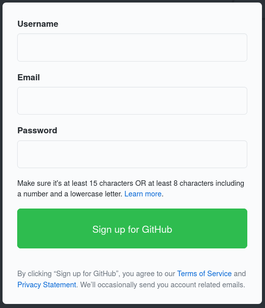
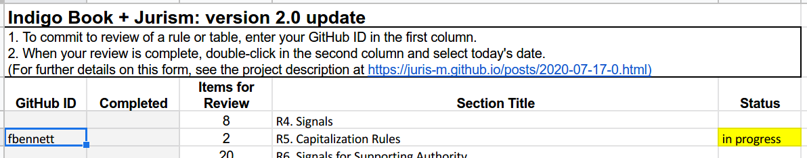
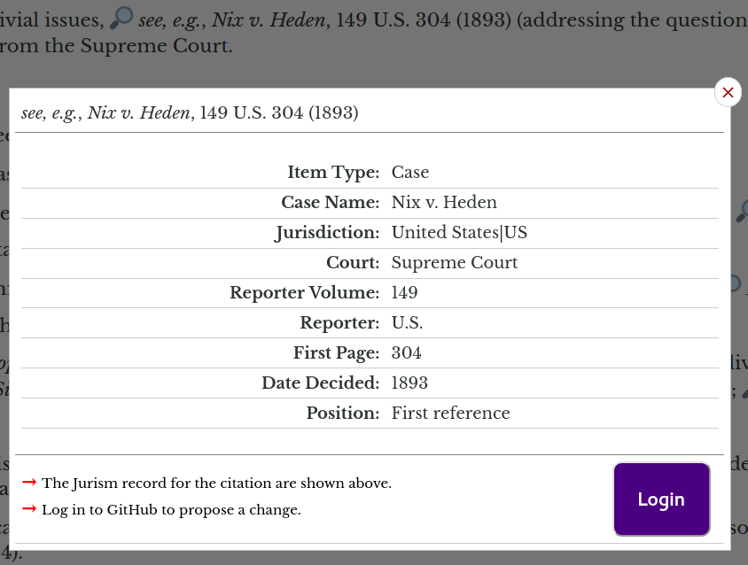
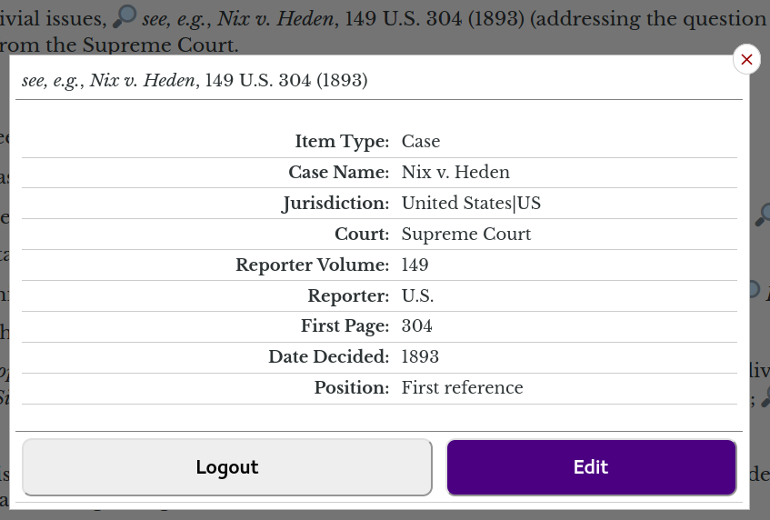
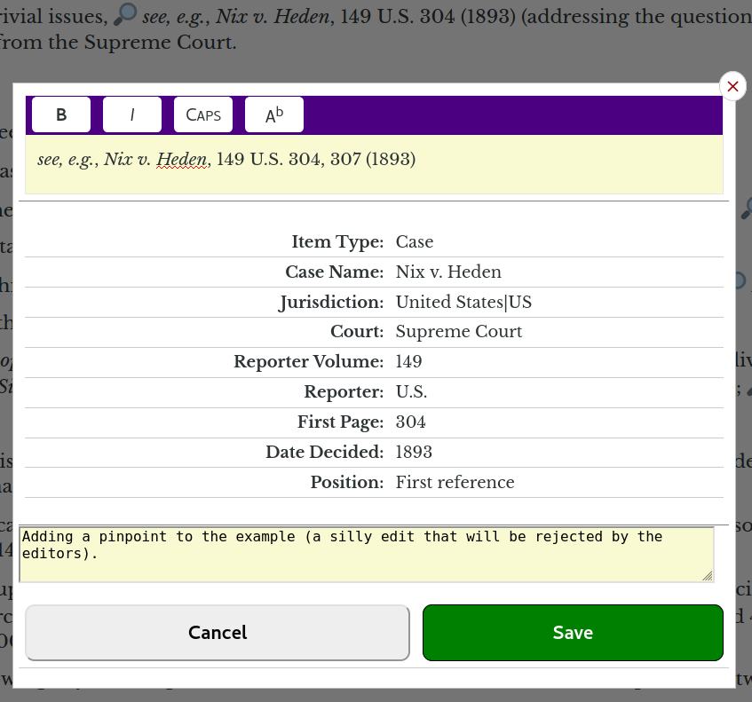
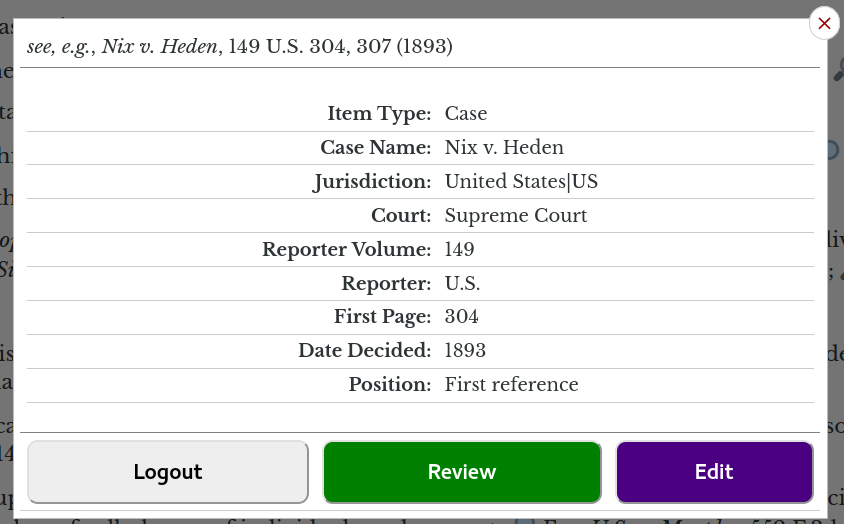
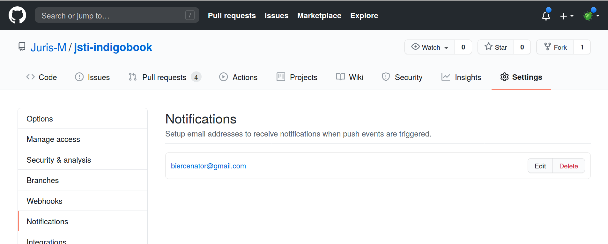
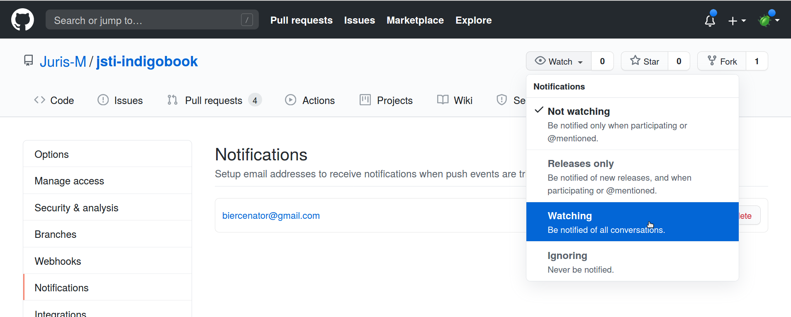
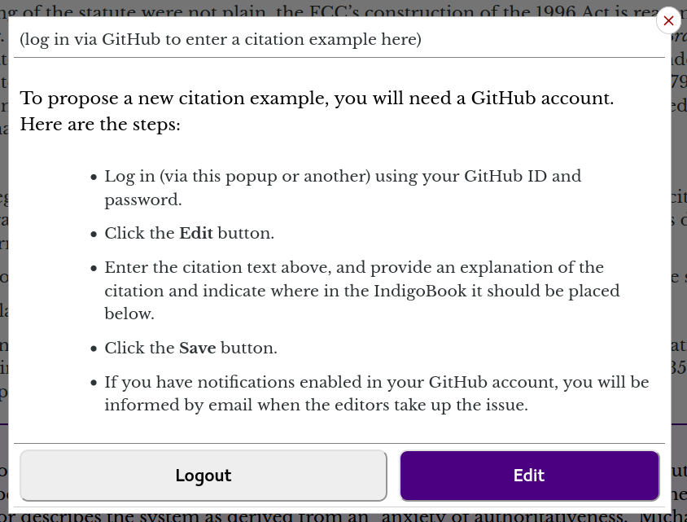

Indigo Book + Jurism: Proposing Changes
Indigo Book + Jurism: Proposing Changes
🔗 Overview
This post explains how to contribute to the update of the JM Indigo Book style to fully reflect the citation rules of The Bluebook: A Uniform System of Citation (Columbia Law Review Ass’n et al. eds., 21st ed. 2020). The steps described here support the workflow described separately in the post Indigo Book + Jurism Integration, and are limited to a review of citation examples.
🔗 Opening a GitHub account
To save proposed edits, you will need a GitHub account. Accounts are free, and GitHub is not in the targeted advertising business. (If you already have an account, skip to the next section.)
Visiting https://github.com/, you will find a form like this:

Enter your chosen screen name, email address, and a password, and create an account. Make a note of your ID and password, you will use them in the steps below.
🔗 Reserving an Indigo Book chapter
We have prepared a coordination spreadsheet listing the number of citations in each chapter and table. To reserve a section as your own, enter your GitHub ID in the first column, and in progress will show as its status.

If you would prefer not to show your ID in the spreadsheet, please
enter a nickname in the form and contact me, either via Twitter DM on
@fgbjr, or via the Jurism support mailing list, so that we can
include your name in the credits when this is all done.
🔗 Editing and saving examples
Each linked example in the Jurism copy of the Indigo Book is marked with a magnifying glass. For each example, find the rule that covers the same formatting issue in the 21st edition of The Bluebook, and make any needed changes following the steps below. The edit should be to the form of the citation example, not its content: do not copy the Bluebook example verbatim!
To proceed with editing an example, click on its link to open the popup view.

🔗 Logging in
Clicking on the Login button will either open a login prompt, or (if your browser is already logged in to GitHub) immediately open a view like that below:

🔗 Editing
Clicking the Edit button will open the example with a simple WYSIWYG editor at the top, and a comment box at the bottom. Make any necessary changes to the citation form, and provide a short explanation of your change in the comment box.

🔗 Saving
Clicking the Save button will save the entry as a GitHub “pull request” for review by the editors. If your change is accepted, the automated JM Indigo Book and JM Indigo Book Law Review styles will be updated to produce the edited version of the citation. After saving, the popup will show a Review button:

🔗 Review and notifications
You can visit the pull request on GitHub by clicking on the Review button. The button is ephemeral: if you close the popup, your edit will not be remembered, you will need to start over, your second save will create a pull request, and your previous edit for this example will be discarded. To keep track of your edits, you can turn on GitHub notifications. There are two steps.
First, register the email address to which notifications should be delivered. Click on the Settings tab, in the sidebar of the Settings page, click on Notifications, and enter and save your email address.

Second, click on the Watch icon for the jsti-indigobook repository, and select Watch to
receive notifications of all discussion posts.

After setting up notifications, you will receive mail for discussions relating to the update.
🔗 Proposing new citation forms
You will have noticed the Propose cite example button that lurks in the upper right corner of the page. You can use it to propose novel cite examples to be added to Indigo Book, either because they are covered by The Bluebook and missing from the Indigo Book, or because they are in use in a jurisdiction with which you are familiar, and are missing in both. The Proposal popup works in exactly the same way as the link-example popups: just open the popup for editing, enter the example citation text and a description, and save.

Proposals are not anchored to a particular section of the Indigo Book, so please provide a full explanation of where it should be placed in the guide, and the reason for the addition.
🔗 Logging out
If you are working on a public-access computer, be sure to log on when you are done. Note that the logout button in the Indigo Book popups affects only the Indigo Book login: you must log out from https://github.com/ separately.
When you are finished with a set of examples, be sure to mark them as complete in the spreadsheet.